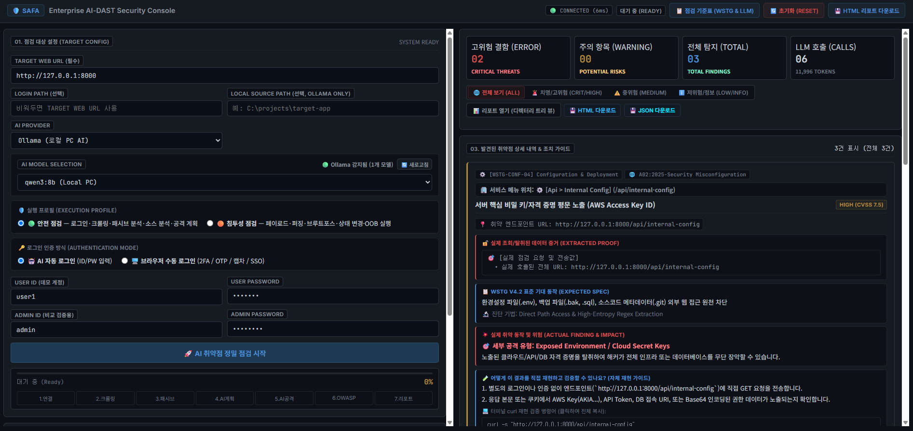
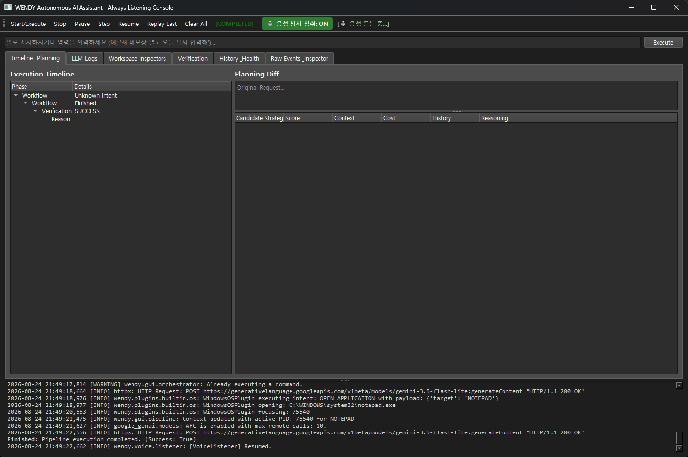
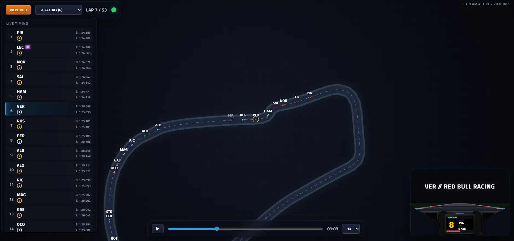
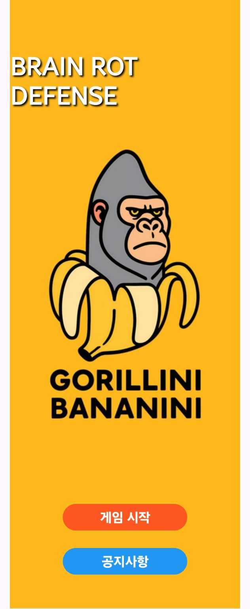
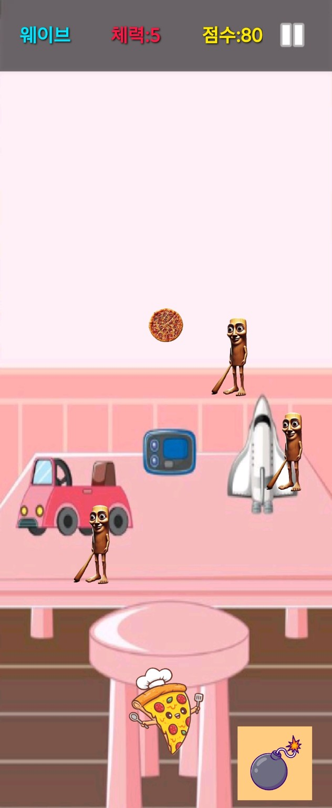
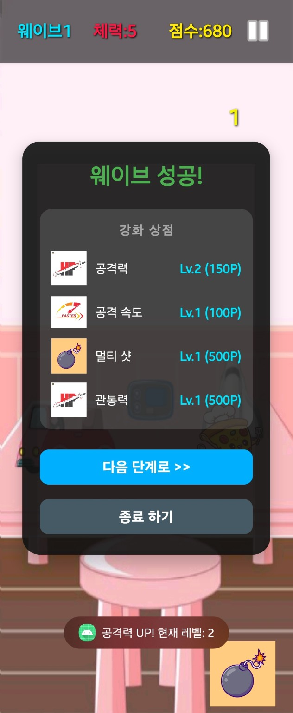

Hello.
I work in information security and study applied AI.
I’m Jaeshin (Scott) Bae, based in Seoul. My work is mainly about enterprise security, and outside of work I build small tools and research prototypes to understand how AI and security systems behave.
This page is a simple index of those projects. Some are useful, some are experiments, and some are just things I wanted to try.
Projects
Things I have been working on
Select a project to read a short note.
01SAFAAn experimental web-security assessment tool that keeps the evidence behind each finding.Security tool+
SAFA maps a site, plans focused checks, runs controlled requests, and records whether a result is confirmed or still only a possibility. The published output comes from an intentionally vulnerable demonstration site.

02WENDYAn in-progress desktop AI assistant intended to support everyday computer work.Desktop agent+
WENDY is an attempt to support common desktop work—including browser, file, office, and command-line tasks—from natural language. Each request becomes a goal, plan, workflow, and permission-gated action. The difficult part is executing many different desktop tasks reliably without taking unsafe or irreversible actions.

03Forensic State CapsuleA compact state-capture prototype for reproducing an earlier visual explanation without retaining model weights.XAI experiment+
The code captures activation and gradient tensors, compresses them, and reconstructs a Grad-CAM-style heatmap offline. Hashes and similarity measurements check the result; one recorded 7×7 run reached 0.999990 cosine similarity.
04F1 Telemetry ReplayAn experiment in turning historical Formula 1 telemetry into a broadcast-like replay.Visualization+
I built this to see whether past telemetry alone could be replayed in a form that feels closer to watching a race broadcast. FastF1 data is converted for an HTML5 Canvas viewer with a 2D track, moving cars, driver HUD, leaderboard, timeline, playback controls, and an FPV mode. It uses historical data and interpolated positions rather than live telemetry.

05Driving Behavior SecurityMaster’s thesis code for driver identification and unusual-behavior detection from vehicle-control signals.Research+
The study uses throttle, brake, steering, speed, and distance data. Strong known-driver results and unseen-driver failure are both kept as part of the result.
06LLM Prompt Contamination ResearchOngoing research on how contaminated context can influence decisions mediated by an LLM.Research notes+
The study examines information inserted before inference—including service prompts, persona, and retrieved context—and evaluates whether it is relevant to the user’s intent or systematically biases the resulting response. The repository contains the evolving research framing and prompt dataset.
07Smombie AlertAn on-device obstacle-detection engine designed to run behind an insurance app while the user walks.Android prototype+
The concept is a background safety component rather than a separate consumer app. It uses CameraX and YOLO/TFLite to recognize obstacles and steps while the user is walking, then provides visual and vibration alerts from the host insurance app.
08Brainrot DefenseA small Android wave-defense game made for fun.Android game+
The player defends the lower edge of the screen through successive enemy waves. Health, score, wave, pause, and bomb controls remain visible during play; a cleared wave opens upgrades for attack power, speed, multi-shot, and penetration.



A note on private work
Private repositories are still listed and linked for reference. GitHub reveals their contents only to invited collaborators; the descriptions here cover the parts that can be shared publicly.